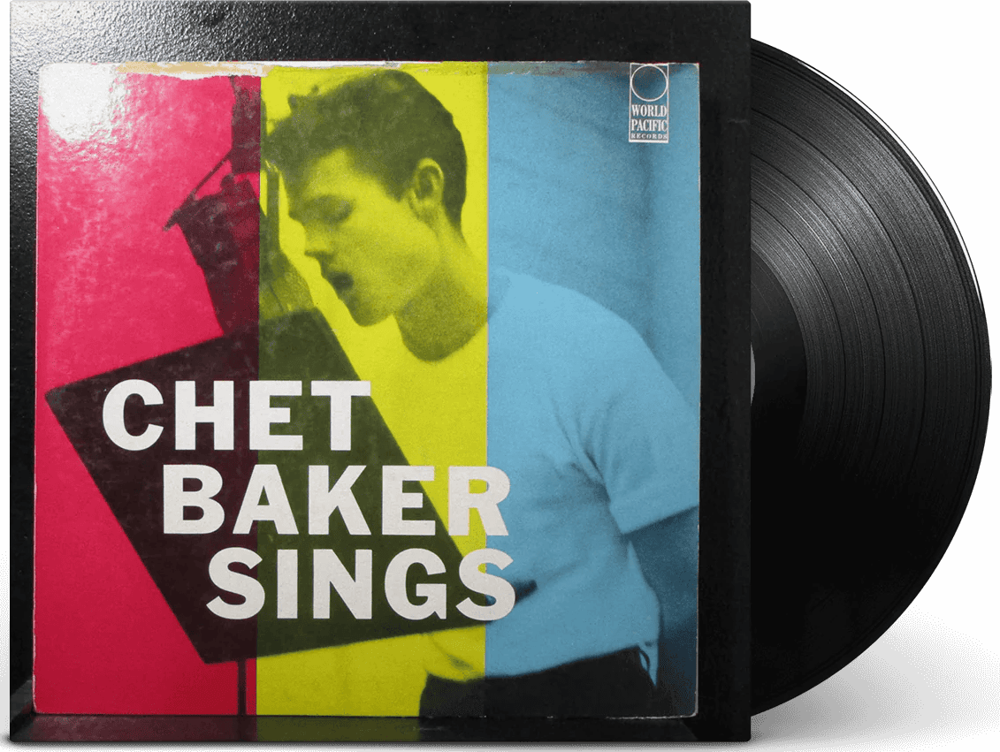
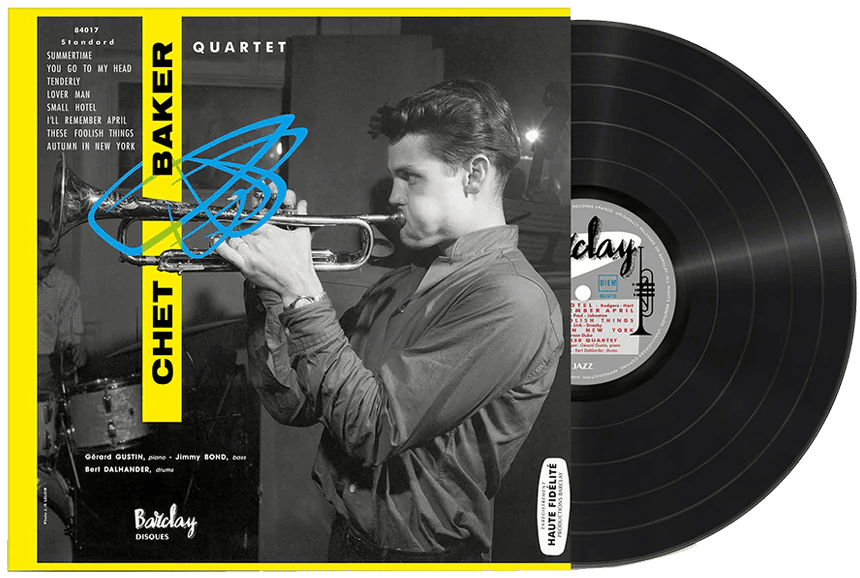

| 이름 | Chet Baker (쳇 베이커) |
|---|---|
| 출생 | 1929년 12월 23일 오클라호마주 예일 |
| 사망 | 1988년 5월 13일(58세) |
| 활동 시기 | 1949년~1988년 |
| 악기 | 트럼펫, 피아노, 플루겔혼 |
미국의 재즈 트럼펫 연주자 겸 가수. 느슨하고 낭만적이면서도 울적한 분위기의 트럼펫 연주와 중성적 음색의 노래, 그리고 그와는 상반되는 막장스럽고
방탕한 인생사로 유명하다. 웨스트 코스트 재즈의 명인이자 쿨 재즈를 대표하는 전설적인 음악가 중 한 명이다. 대표작은 Chet Baker Sings와 Chet이 있다.
편안하고 우수에 짙은 음악을 추구하여 1950년대 쿨 재즈, 특히 웨스트 코스트 재즈를 대표하는 인물로 자리매김하였다. 음악적 성공에도 불구하고 1960년대 약물중독으로 여러차례 수감되었다. 1988년 네덜란드 암스테르담의 한 호텔 유리창에서 추락하여 사망하였다.
쳇 베이커는 오클라호마주 예일에서 태어나고 자랐다. 베이커의 아버지는 전문 기타 연주자였다. 교회 성가대에서 노래를 하면서 음악적 활동을 시작하였다. \\ 베이커에게 처음 트롬본을 가르쳐준 것은 아버지였는데, 트롬본이 어린 베이커가 다루기에는 좀 크다고 생각돼서 트럼펫으로 바꾸게 되었다.
편안하고 우수에 짙은 음악을 추구하여 1950년대 쿨 재즈, 특히 웨스트 코스트 재즈를 대표하는 인물로 자리매김하였다. 음악적 성공에도 불구하고 1960년대 약물중독으로 여러차례 수감되었다. 1988년 네덜란드 암스테르담의 한 호텔 유리창에서 추락하여 사망하였다.
쳇 베이커는 오클라호마주 예일에서 태어나고 자랐다. 베이커의 아버지는 전문 기타 연주자였다. 교회 성가대에서 노래를 하면서 음악적 활동을 시작하였다. \\ 베이커에게 처음 트롬본을 가르쳐준 것은 아버지였는데, 트롬본이 어린 베이커가 다루기에는 좀 크다고 생각돼서 트럼펫으로 바꾸게 되었다.

